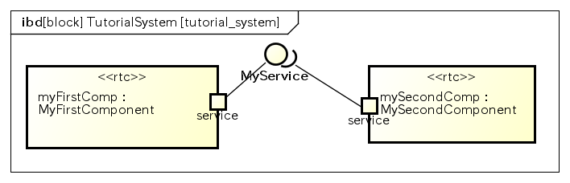

Powered By
このプラグインは、独立行政法人産業技術総合研究所と共同研究した成果を活用しています。

このプラグインは、独立行政法人産業技術総合研究所と共同研究した成果を活用しています。
ポートを介して、他のRTコンポーネントと連携するモデルを設計する では、SysMLのポートを用いた設計方法について説明しました。
このチュートリアルでは、次の項目について説明します。
MyFirstComponentブロックが提供するインタフェースを利用して、MySecondComponentからMyFirstComponentを移動させる指示を行うシステムを設計します
ブロック図
内部ブロック図

ブロックがどのようなサービスを提供、要求しているかといったことをポートとインタフェースを使って表すことができます。
先の ポートを介して、他のRTコンポーネントと連携するモデルを設計する で作成したモデルを元に、MyFirstComponentブロックに移動を指示できるMoveServiceインタフェースを追加しましょう。
その前に、前回作成したポートを一旦すべて削除します。MyFirstComponent、MySecondComponentに設計されたポートを選択し「モデルから削除」メニューを選択して削除し、ポートを持たないmyFirstCompとmySecondCompパートを作成して下さい。
インタフェースを設計するには、まずポートを追加する必要があります。ポートを介して、他のRTコンポーネントと連携するモデルを設計する で行ったように、新しいポートをmyFirstCompパートに作成し、名前をserviceと設計して下さい。
次にMyServiceインタフェースに操作を設計し、MyFirstComponentブロックに作成した”service”ポートに接続します。
インタフェースはツールバー「インタフェース」から作成できます。
ツールバー「インタフェース」を選択し、内部ブロック図の好きな場所を選択します。すると、図上に”インタフェース0”というラベルのインタフェースが作成されます。
作成されたインタフェースのプロパティは、今までと同様にプロパティビューから編集できるので、”インタフェース0”を選択しプロパティビューを表示させます。 表示されたプロパティから、名前をMoveServiceに変更します。
次にMoveServiceインタフェースの操作に、driveという名前の操作を追加します。
ここまでの操作で、次のようなdrive操作が追加されているはずです。
次に、drive操作にパラメータを設計しましょう。
ここまでの操作で、パラメータは次のようになっているはずです。
Hint
パラメータ型の候補には、IDLパッケージのshortの他にshort、int、longなどの型が表示されます。 RTMと連携したSysMLモデルを設計する場合、IDLパッケージに用意されたIDL型を利用して下さい。
これでleftWheelとrightWheelパラメータをもつdrive操作を設計できました。
このように作成されたMoveServiceインタフェースを、MyFirstComponentブロックが提供することを設計します。
ブロックがインタフェースを提供、つまりインタフェースの操作を他のブロックから利用できるように提供していることを示すには、ポートに提供インタフェースとして接続する必要があります。
インタフェースをポートに提供インタフェースとして接続するには、ツールバー「実現」を利用します。
ツールバー「実現」を選択し、myFirstComponentパートの”service”ポートをクリックします。
続いて、そのままMoveServiceにマウスをホバーさせると、次のように三角のアイコンがついた線がMoveServiceまで伸びるので、そのままクリックしてください。
これで、”service”ポートにMoveServiceを提供インタフェースとして定義できました。
これまでの操作で、MyFirstComponentブロックがMoveServiceインタフェースを提供していることを設計できました。次はMySecondComponentブロックが、このMoveServiceインタフェースを利用してメッセージのやり取りを行っていることを設計しましょう。
Warning
ポートの名前を一致させないと、インタフェースを提供、要求するポートを用いたメッセージのやりとりが正しく動作しません
インタフェースをポートに要求インタフェースとして接続するには、ツールバー「使用依存」を利用します。
ツールバー「使用依存」を選択し、mySecondComponentパートの”service”ポートをクリックします。
続いて、そのままMoveServiceにマウスをホバーさせると、次のように三角のアイコンがついた線がMoveServiceまで伸びるので、そのままクリックしてください。
これまでの操作で、次のようなモデルが作成されているはずです。
このような操作で、RTコンポーネント間のインタフェースを介したメッセージのやり取りを、SysMLを用いて設計することができます。
RT(Robot Technology)コンポーネントを設計する で行ったように、内部ブロック図からRTC/RTSプロファイルを生成するため、これまで設計してきた内部ブロック図を開き、メニュー ツール ‣ SysML-RTM ‣ 開いている図からRTC/RTSプロファイルを生成する を選択します。 表示されるダイアログで、RTC/RTSプロファイルを生成するフォルダにを指定し「生成」ボタンを押下して下さい。
出力場所で指定したフォルダ(以下の例では/tmp/tutorial/interface_tutorial)には、次のようなファイルが生成されています。
/tmp/tutorial/interface_tutorial/ |- MyFirstComponent.xml |- MySecondComponent.xml |- MyService.idl |- tutorial_system.xml
RTコンポーネントMyFirstComponentのRTCプロファイル
RTコンポーネントMySecondComponentのRTCプロファイル
SysMLで設計した、MoveServiceインタフェースの構造を表すIDLファイル
TutorialSystemのRTSプロファイル
RTS/RTCプロファイルの他に、インタフェースを利用した場合、その構造がIDLファイルとしても生成されます。
生成されたRTCプロファイルをRTCBuilderにインポートし、MyFirstComponentのソースコードのひな形を生成します。
基本的な手順は RT(Robot Technology)コンポーネントを設計する と同様ですが、今回はインタフェースから生成されたIDLファイルが参照する、OpenRTM-aistが提供するIDLファイルへのパスの設定が追加で必要になります。
RTCBuilderを起動し、MyFirstComponentプロジェクトを作成します。
「基本」タブのプロファイル情報のインポート・エクスポートの「インポート」ボタンから生成したRTCプロファイルを選択します。
インポートされると、次のようにMoveServiceインタフェースを提供するコンポーネントがRTCBuilderに取り込まれるはずです。
「サービスポート」タブを開き、ツリーから「service」-「myService」を選択します。
表示されたプロパティのインタフェース名の「IDLパス」に、OpenRTM-aistのidlファイルが配置されているディレクトリ(ex. /usr/include/openrtm-1.1/rtm/idl)を選択します。
言語タブでC++やPythonなど任意の言語を選択し「基本」タブの「コード生成とパッケージ」の「コード生成」ボタンを押下し、ソースコードのひな形を生成します。
このような手順でSysMLから生成されたRTCプロファイルを元に、インタフェースを利用したRTコンポーネントのソースコードのひな形を作成できます。
生成されたRTSプロファイルを用いて、RTSystemEditorでシステムを復元します。
基本的な手順は RT(Robot Technology)コンポーネントを設計する と同様に、システムエディタのコンテキストメニュー「Open and Restore」を選択し、RTSプロファイルを選択し復元します。 ただし、RTSプロファイルのインポート で説明したように、復元する前にSysMLのパートで指定したプロパティ名とRTコンポーネントのインスタンス名、CORBA Naming Serviceにバインドする際の名前を一致させて下さい。
ex)MyFirstComponent/rtc.conf
naming.format : myFirstComp.rtc manager.components.precreate: MyFirstComponent?instance_name=myFirstCompex)MySecondComponent/rtc.conf
naming.format : mySecondComp.rtc manager.components.precreate: MySecondComponent?instance_name=mySecondComp
このようにSysMLのポートと提供、要求インタフェースを用いて、RTコンポーネントにおけるサービスポートを介した、ロボットシステムのモデルを設計できます。

{kind=link}
{kind=link}